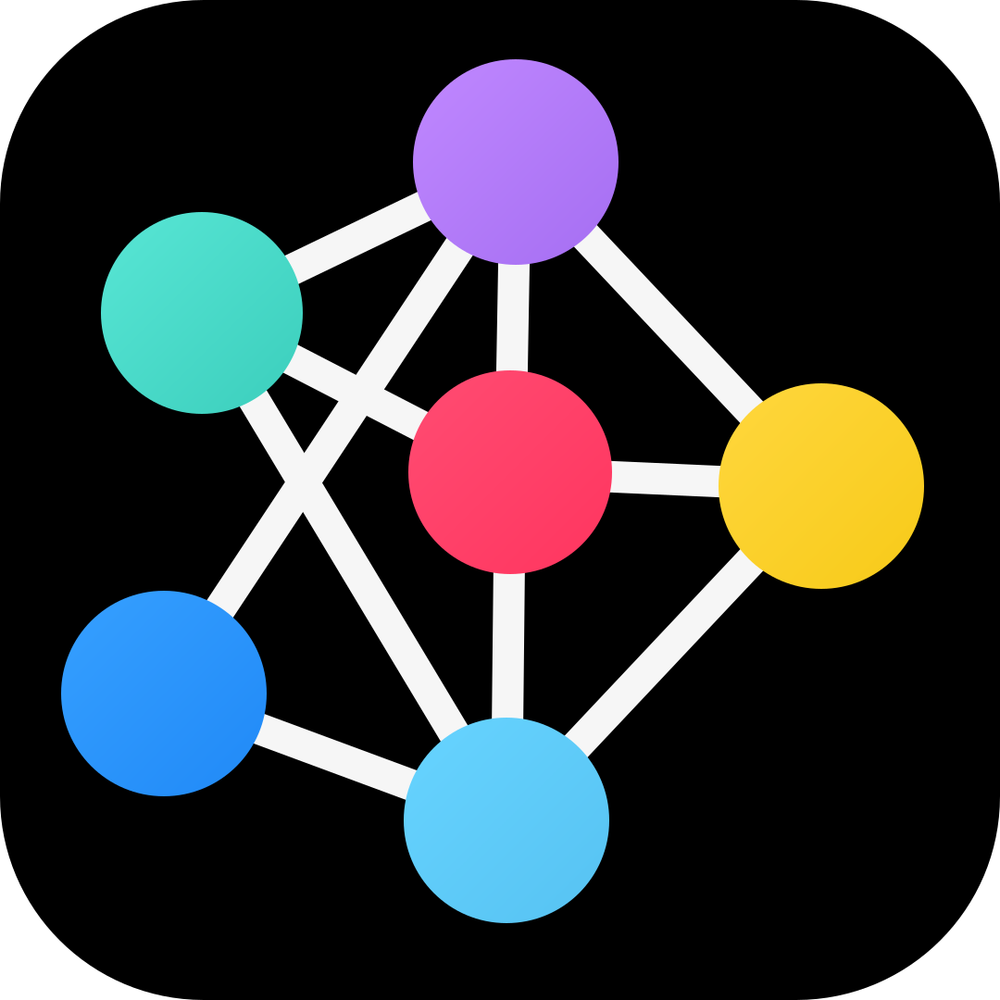

Python 코드READY

알고리줌SWEA 2382
미생물 격리
군집을 한 칸씩 이동하고 가장자리에서 절반으로 줄인 뒤, 같은 칸의 군집을 합칩니다. 합계(total)와 방향 기준(max_count)의 차이를 단계별로 확인하세요.
미생물 이동 격자N × N
파랑: 이동 완료 · 회색: 아직 이동 전 · 노랑: 이동/처리 중 · 주황 테두리: 가장자리 · ↑ ↓ ← →: 이동 방향
현재 위치의 board 정보
군집을 선택하면 합체 결과가 표시됩니다.
변수와 상태READY
hour · 경과 시간0
이동한 군집—
nr, nc · 도착 좌표—
n, d · 미생물/방향—
total · 해당 칸 합계—
max_count · 방향 기준—
현재 표시된 군집 수0
남은 미생물 총합0
미생물 이동을 준비합니다.
출력실행 결과
입력학습용 제한: 5 ≤ N ≤ 20 · M ≤ 25 · K ≤ 30
SWEA 형식 그대로 입력하세요. T 다음에 N M K, 이어서 K줄의 행·열·미생물 수·방향(1↑ 2↓ 3← 4→)을 입력합니다. 시각화 속도를 위해 입력 크기만 제한합니다.